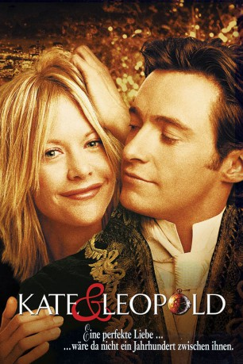
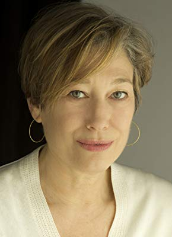

#1349 Kate & Leopold
Auszeichnungen: für 1 Oscars nominiert 1 GoldenGlobes gewonnen
 
 IMDB-Wertung: 6.4 / 10
IMDB-Wertung: 6.4 / 10  Metascore: 44
Metascore: 44 
Kate (Meg Ryan) lebt mit ihrem Bruder Charlie (Breckin Meyer) zusammen im heutigen New York. Während sie sich um einen beruflichen Aufstieg in der Werbebranche bemüht, findet ihr Ex-Freund Stuart (Liev Schreiber) eine Art Zeitportal bei der Brooklyn Bridge, das er ausnützt, um in den 70er Jahren des 19.Jahrhunderts Fotos zu schießen. Doch dort fällt er dem jungen Leopold Mountbatten (Hugh Jackman) wegen seiner kleinen Kamera auf, der ihm ins heutige New York folgt. Als Stuart wegen eines Unfalls im Krankenhaus landet, freundet sich Charlie mit dem intelligenten Fremden an, den er für einen Schauspieler hält. Doch Leopold lernt schnell und bemüht sich, als wahrer Gentlemen in unserer heutigen Zeit zurechtzukommen. Das hat auch Einfluß auf die ehrgeizige Kate...
hier löychen - besser Quali liegt vor doppelt
Jahr: 2001
Dauer: 118 Minuten
FSK: 0
Land: USA Studio: MiramaxTonspuren:
Untertitel:
Auflösung: 720p (1280x720) Größe: 4454 MB
Genre: Komödie, Fantasy, Liebe
Regisseur:  James Mangold
James Mangold
Drehbuch: Steven Rogers, James Mangold, Steven Rogers
Soundtrack: Rolfe Kent
Darsteller:
 Meg Ryan als Kate McKay
Meg Ryan als Kate McKay Hugh Jackman als Leopold
Hugh Jackman als Leopold Liev Schreiber als Stuart Besser
Liev Schreiber als Stuart Besser Breckin Meyer als Charlie McKay
Breckin Meyer als Charlie McKay Natasha Lyonne als Darci
Natasha Lyonne als Darci Bradley Whitford als J.J. Camden
Bradley Whitford als J.J. Camden- Paxton Whitehead als Uncle Millard
 Spalding Gray als Dr. Geisler
Spalding Gray als Dr. Geisler Josh Stamberg als Colleague Bob
Josh Stamberg als Colleague Bob Charlotte Ayanna als Patrice
Charlotte Ayanna als Patrice Philip Bosco als Otis
Philip Bosco als Otis Andrew Jack als Roebling
Andrew Jack als Roebling Kristen Schaal als Miss Tree
Kristen Schaal als Miss Tree Arthur J. Nascarella als Gracy
Arthur J. Nascarella als Gracy- Robert Ray Manning Jr. als Passerby
 Viola Davis als Policewoman
Viola Davis als Policewoman Francis Dumaurier als Faux Emeril
Francis Dumaurier als Faux Emeril- Stephanie Montalvo als CRG Intern
 Chazz Menendez als Purse Thief
Chazz Menendez als Purse Thief- Brandon Parrish als Dennis
- Brittney Startzman als Monica
- Martha Madison als Office Woman
- Stephanie Sanditz als Gretchen
 John Rothman als Executive #1
John Rothman als Executive #1- Michael Cassady als Executive #3
- Brian Letscher als Ad Executive
-  Meg Gibson als Executive's Wife
 Kevin Daniels als Doorman at Party
Kevin Daniels als Doorman at Party- Frank Arcuri als 1876 Doorman
- Andrea Barnes als Clara , uncredited
 Craig Bierko als Actor in Advertisement , uncredited
Craig Bierko als Actor in Advertisement , uncredited Diana Brownstone als Prospective Bride , uncredited
Diana Brownstone als Prospective Bride , uncredited- Daphna Cardinale als Gossip , uncredited
 Monique Gabriela Curnen als Monica Martinez , uncredited
Monique Gabriela Curnen als Monica Martinez , uncredited- Aimee Denaro als Movie Goer , uncredited
 Shalom Harlow als Woman in Movie , uncredited
Shalom Harlow als Woman in Movie , uncredited- Elizabeth Logan als Movie Goer , uncredited
 Domenick Lombardozzi als Counterman , uncredited
Domenick Lombardozzi als Counterman , uncredited- Jorjeana Marie als Leopold's Maid , uncredited
- Celia A. Montgomery als Red-Haired Flirting Woman at Brooklyn Bridge, 1870s , uncredited
 Todd Poudrier als Bartender , uncredited
Todd Poudrier als Bartender , uncredited- Matthew Sussman als Ad Executive Phil
- Stan Tracy als Photographer
- William Sanford als Barry
- Roma Torre als TV Newscaster
- Ray Seiden als Sanitation Worker
- Jonathan Fried als Faux Wolfgang
- Cole Hawkins als Hector
- Ebony Jo-Ann als Nurse Ester
- George Hahn als Assistant Director
Datei: X:\2001\Kate & Leopold (2001, FSKo.Al., 1280x720).mkv seit 26.06.2015
Festplatte: HD 1996-2002
 Es gibt insgesamt 102 Filme in der Gruppe '2001'
Es gibt insgesamt 102 Filme in der Gruppe '2001'